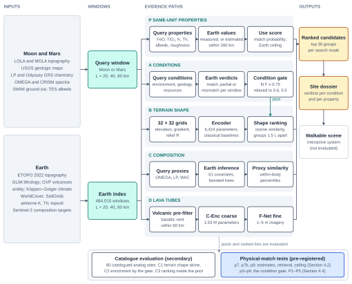

NASA Space Apps Challenge 2026 · TwinGround · Brief
How Close Can Earth Get?
Property-level analogs for the Moon and Mars, with the limits Earth cannot cross
1. The question
No place on Earth is identical to a site on the Moon or Mars. Analog sites are chosen for a use: rover trials need similar slopes and roughness, resource (ISRU) trials need similar feedstock chemistry, and thermal trials need similar temperatures. The useful questions are therefore how close Earth can get for that use, and where the closest sites are.
Today analogs are chosen mostly by expert judgement of the setting: dry, bare, basaltic, cold. We tested whether matching such conditions finds sites with the right measured properties, and built a direct, property-by-property comparison that also states what Earth cannot supply.
2. What TwinGround does
- Pick a window. Any lunar or Martian window of 20, 40 or 80 km, chosen on the globe.
- Read its properties in Earth units. FeO, TiO₂, K and Th from the Lunar Prospector and Mars Odyssey gamma-ray spectrometers, albedo from LROC WAC and TES, and kilometre-scale roughness from LOLA and MOLA.
- Compare with Earth. 75,860 Earth windows of 40 km carry measured airborne K and Th (Australia, North America), topsoil FeO and TiO₂ (United States, Australia, Europe), snow-free albedo, roughness and surface temperature, plus estimates with 90% intervals within 300 km of measurements.
- Rank for a use. For resources, mobility, thermal work or base siting, Earth windows are ranked by the probability that each property lies within tolerance (FeO ±3 wt%, TiO₂ ±1.5 wt%, K ±0.2 wt%, Th ±2 ppm, albedo ±0.05, roughness ±1°, temperature ±20 K).
- State the Earth ceiling. For the query and use, the best score any measured Earth window reaches, so every candidate is read against what is possible at all.
- Describe each candidate. Which properties match, which do not and which Earth cannot supply, together with the existing site dossier: environment, geology and resource conditions, what can be tested there and how to get there.

3. What we found
Every test below was frozen with a SHA-256 hash before its Earth data were read, and run once with one seed. Details and all deviations are in the full paper.
| Question | Answer |
|---|---|
| How close can Earth get? | For lunar resource use the mean ceiling is 0.75, and no Earth window matches FeO, TiO₂, K and Th together. Martian FeO lies above every measured Earth topsoil footprint (52 of 52 queries) and Martian footprint-scale Th below every covered Earth window. For 8 of 18 Martian queries no measured Earth surface comes within 20 K of the night temperature. Roughness can always be matched. |
| Do properties find better analogs than conditions? | Yes. On held-out measurements, ranking by estimated properties reached a retrieval efficiency of 0.52–0.77 for lunar-type FeO, K and Th, against −0.19 to 0.02 for condition matching (0 = random, 1 = as good as the measurements themselves). Nearest neighbours in covariate space did as well as the estimates. |
| Can Earth chemistry be estimated where it was not measured? | Within 300 km of measurements, yes: R² 0.64 (K), 0.41 (Th), 0.40 (FeO) and 0.32 (TiO₂), with 90% intervals covering 90–93% of test windows. On another continent, no: R² stayed below the 0.30 threshold in every case (best 0.21). |
| What do expert-style conditions find? | The kind of setting experts name (catalogued analogs of the expected type were about 12 times denser among gated windows), but not the query’s measured properties: gated candidates were no closer than random windows (+1.3 percentage points; 95% CI −3.2 to 5.2) and were richer in K and Th than the lunar and Martian ground in all 20 distinct pools. |
4. Three worked cases
A. Mare Tranquillitatis pit (Moon, 8.3°N 33.2°E): resources
Query: FeO 18.1 wt%, TiO₂ 7.6 wt%, K 0.11 wt%, Th 2.7 ppm. Earth ceiling 0.40. No measured Earth window lies within tolerance on TiO₂ (0 of 4,611) and only one on FeO (1 of 4,610). The 135 Earth windows that reach the ceiling, most of them in Western and South Australia and others in Alaska and Manitoba, match K and Th only. High-titanium mare basalt cannot be reproduced on Earth at this scale.
B. Descartes highlands, Apollo 16 (Moon, 9.0°S 15.5°E): resources
Query: FeO 7.6 wt%, TiO₂ 0.86 wt%, K 0.09 wt%, Th 2.9 ppm. Earth ceiling 0.80. The best windows lie in the Great Basin and on the Columbia Plateau of Oregon: FeO 4.8–9.2 wt%, TiO₂ 0.7–1.9 wt% and Th 4.1–4.6 ppm are within tolerance, but K is 1.1–1.4 wt%, more than ten times the lunar value. Highland-like iron and titanium exist on Earth; lunar-like potassium does not.
C. Jezero crater (Mars, 18.4°N 77.7°E): resources and base siting
Query: FeO 21.4 wt%, K 0.32 wt%, Th 0.6 ppm. Resource ceiling 0.57. FeO lies beyond every measured Earth topsoil footprint (0 of 2,868). K and Th are within tolerance in low-K terrains of Saskatchewan and southwest Alaska (K 0.37–0.44 wt%, Th 2.1–2.5 ppm), although the ±2 ppm tolerance is lenient for Martian thorium. Base siting: roughness and albedo both match, for example in the Namibe and Kaokoland desert of southwest Angola, but no Earth window matches the modelled night temperature, so the base-siting ceiling is 0.75. The interactive system, which has no Martian temperature, shows 1.0 from roughness and albedo alone.
5. Limits
- Earth chemistry exists only where it was measured (Australia, North America, Europe) or within 300 km of measurements; elsewhere the system says there is no reliable estimate.
- Estimates enter the scores only for K at the Martian footprint, the one retrieval test in which they beat the nearest-neighbour baseline; other estimates are shown with their intervals but not scored.
- The tolerances are absolute, so they are lenient for low lunar and Martian values.
- Candidates are screening results. They are not verified analogs, safety assessments or traverse plans, and no expert rating was possible.
- The paper’s framing around the Earth ceiling was chosen after all results had been seen; every protocol and its criteria are unchanged and listed in the full paper.
6. Open data used
Moon: Lunar Prospector GRS, LROC WAC, LOLA. Mars: Mars Odyssey GRS, TES, MOLA, Mars Climate Database. Earth: NOAA ETOPO 2022, Radiometric Map of Australia v4 2019, North American radiometric grids (NAMrad), USGS soils of the conterminous US (DS801), National Geochemical Survey of Australia, FOREGS Geochemical Atlas of Europe, GLASS snow-free albedo, MODIS MOD11A2 and MCD43A4, SoilGrids 2.0, GLiM, ESA WorldCover, Köppen–Geiger, GEOROC. Full references and licences are in the paper.